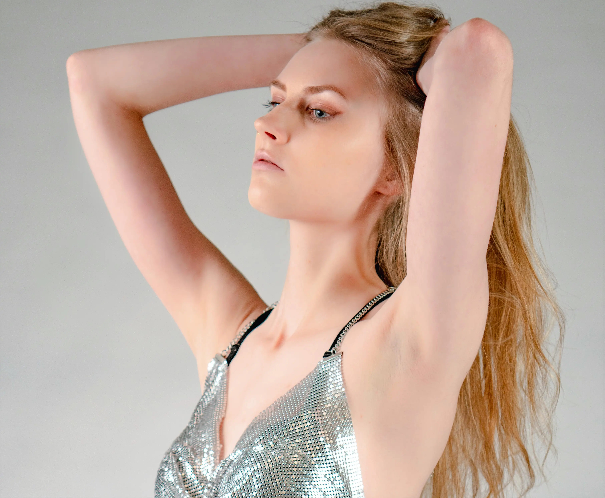
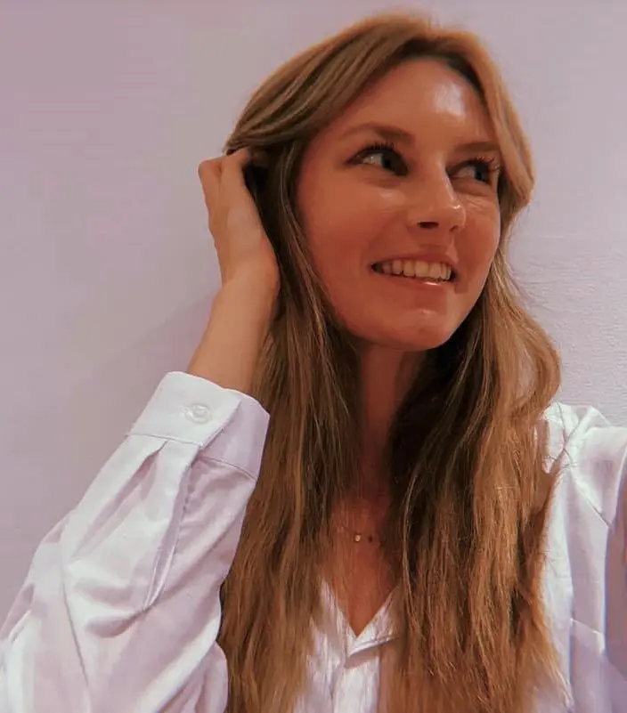

Jeg hedder Puk, jeg er 23 år og bor i Gentofte. Jeg studerer multimediedesign på KEA på 1 semester. På denne side kan du læse lidt mere om hvem jeg er.
Jeg har gået på Dyssegårdsskolen fra 0-7 klasse, og på Skolen Sputnik fra 7-9 klasse. Derefter gik jeg på GXU 10. klasse, på kreativ linje. Jeg tog en 3-årig HF på Gentofte Studenterkursus og dimitterede i 2019. Jeg valgte derefter at tage 2 sabbatår hvor jeg var danser i en musical, og arbejdede i Imerco. I de to år fandt jeg ud af, at jeg godt ville uddanne mig inden for noget med grafisk design. Jeg fandt multimediedesign uddannelsen ved at søge på grafisk design på UG.dk. Så nu går jeg her på KEA, og studerer multimediedesign på 1 semester. Jeg håber på at kunne arbejde som grafisk designer om nogle år.

Jeg har altid elsket at være kreativ. Jeg har tegnet, malet, taget
billeder og syet siden jeg var lille. Min kreativitet er en af grundende
til, at jeg har valgt denne uddannelse. Grafisk design er det jeg er
mest interesseret i på denne uddannelse. Jeg tænker selv meget visuelt
ifht. at finde på ideér, og at lære nye ting. Derfor er det fedt at
kunne kreere de visuelle ideér, jeg går med op i hovedet.
Jeg har gået til dans i ca. 15 år. Den stilart jeg danser nu hedder
”heels”, det er feminin dans i høje hæle. Stilarten handler meget om,
femininitet, teknik, balance, styrke, attitude og ”floorwork”. Jeg
elsker dans, og jeg kan bruge det til at komme lidt væk fra hverdagen.